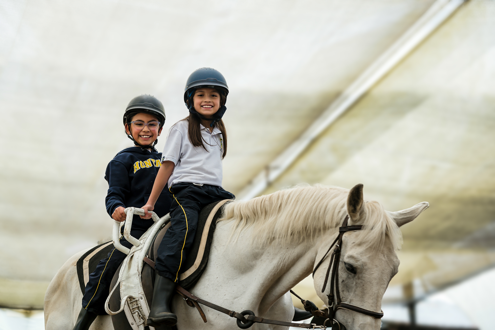

.png)
Preescolar en Bogotá: Aprendizaje Significativo en el Gimnasio El Hontanar

03
Aprender Haciendo
Creemos en el error como parte del aprendizaje, en el trabajo en equipo y en formar niños felices, seguros y sensibles que aprenden haciendo cotidianamente en sus proyectos.
01
Amor y Juego
En nuestro Preescolar, el aprendizaje tiene sentido: aquí los niños comienzan su vida escolar en un espacio seguro y amoroso, formándose a través del juego, la exploración, la literatura, el arte y la experimentación.
02
Acompañamiento
Desarrollamos aprendizajes significativos desde pre-kínder hasta segundo. Nuestro acompañamiento permanente, con docentes bilingües y equipo de bienestar, fomenta la autonomía y pensamiento creativo.

Primaria en el Gimnasio El Hontanar: Enfoque Integral

03
Valores y Deporte
El arte y el deporte acompañan el proceso como reguladores emocionales, mientras que la tecnología se integra con un uso académico y responsable. Formamos en autoestima, autogestión y autoeficacia.
01
Sentido Humano
En la Primaria del Gimnasio El Hontanar, los niños dan el paso a la formalidad académica sin perder su curiosidad ni el sentido humano del aprendizaje. Formamos niños seguros de lo que son y pueden lograr.
02
Proyectos STEM+H
Gracias a proyectos interdisciplinarios con enfoque STEM+H, los estudiantes conectan saberes, formulan sus propias preguntas, construyen pensamiento crítico, creatividad y liderazgo ético.

Escuela Media en el Gimnasio El Hontanar: Desarrollo de la Autonomía

03
Desarrollo Socioemocional
Nuestro modelo combina experiencias de aprendizaje, contenidos globales y currículos activos con componentes propios al desarrollo socioemocional que forman el carácter e identidad en esta decisiva etapa de la vida.
01
Formación y Familia
Acompañamos a preadolescentes y adolescentes en una etapa de grandes cambios. Hacemos un trabajo compartido y muy cercano con las familias, fortaleciendo el desarrollo integral de la persona.
02
Enseñanza para Comprensión
A través de proyectos interdisciplinarios y un modelo de enseñanza para la comprensión, fortalecemos el pensamiento crítico, la capacidad de preguntar, analizar, innovar y tomar sabias decisiones.

Escuela Alta en el Gimnasio El Hontanar: Proyección Universitaria

03
Programa del Diploma IB
En décimo y undécimo fortalecemos el aprendizaje con el Programa del Diploma IB, una preparación de excelencia internacional con autogestión, disciplina, criterio propio y un perfil preparado para el mundo.
01
Proyecto de Vida
Desde noveno grado acompañamos a los jóvenes en la consolidación de su **proyecto de vida** y su preparación óptima para la educación superior; un bachillerato en Bogotá y Chía de altísima calidad académica.
02
Retos Académicos e IB
Los jóvenes asumen nuevos retos académicos, desarrollan el Proyecto Personal del Bachillerato Internacional (IB) y aprenden a investigar, conectar disciplinas e indagar en sus pasiones científicas.


.png)
.jpg)